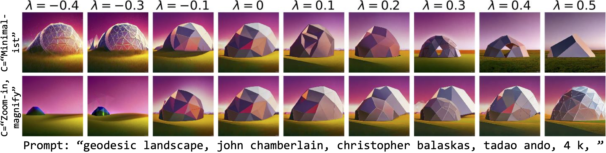
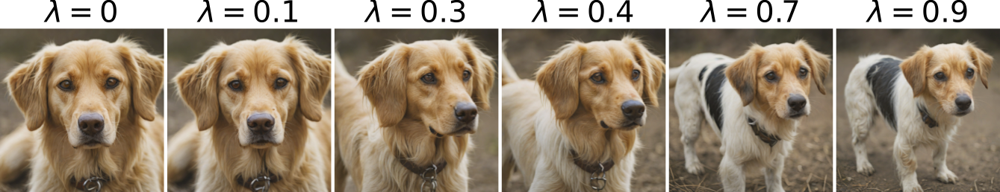
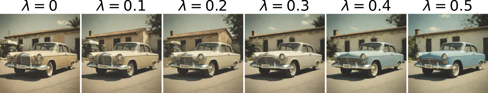
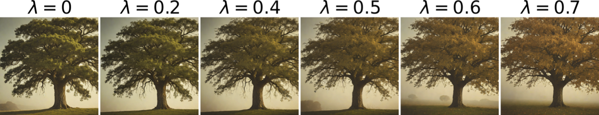

Steering of photographic styles and object attributes

Photographic style manipulation of SD 1.4
for the given prompt "geodesic landscape, john chamberlain, christopher balaskas, tadao ando, 4 k, "
where concept prompts are "minimalist" (Top) and "zoom-in, magnify" (Bottom), respectively.
In the top row, the image is manipulated toward a maximalist style as λ → -1,
while it adopts a minimalist style as λ → 1. Similarly, in the bottom row,
the image appears zoomed out and becomes blurred as λ → -1, whereas it becomes zoomed in and clearer as λ → 1.

Qualitative comparisons with weather Concept Sliders on SDXL-Turbo.
Note that Concept Sliders train specific sliders: winter weather slider and a dark weather slider, whereas our method trains a k-SAE
only once for different concepts. Top: "A photo of a tree with a bench, realistic, 8k" with concept to steer = "winter." Bottom: "A photo of a forest, realistic, 8k" with the concept to steer = "low light." Notice how in the top image our method also removes leaves while in the bottom image, our method effectively applies a low-light effect to the original image.

Image composition manipulation using SDXL-Turbo
for the prompt "A dog" with the concept prompt "Full shot." Notice how as λ → 1, the generated image transitions from a close-up of the face to a full shot.


Object attribute manipulation of SDXL-Turbo
for the given prompts "A car" (Top) and "A photo of a tree" (Bottom), where the concept prompts are "A blue car" (Top) and "Tree with autumn leaves" (Bottom).
By adjusting λ, our method transitions the image toward the desired concept specified by the prompts.
Object attribute manipulation of SDXL-Turbo
for the given prompts "A photo of a cake, 4k,"" where the concept prompts are "A chocolate cake," "A white cake," "A lemon cake," and "An orange cake," respectively.
By adjusting λ, our method transitions the image toward the desired concept specified by the prompts.